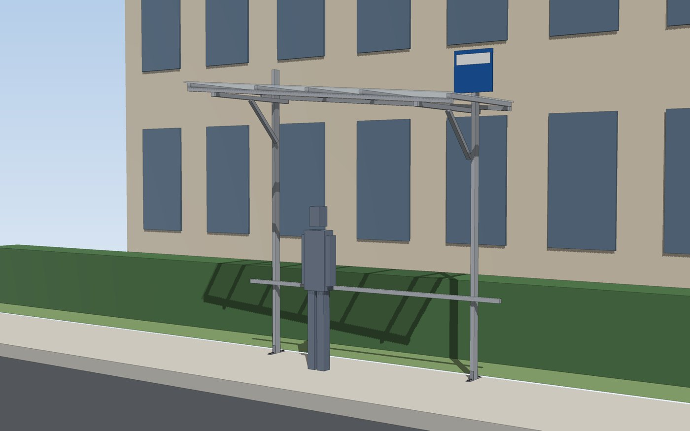
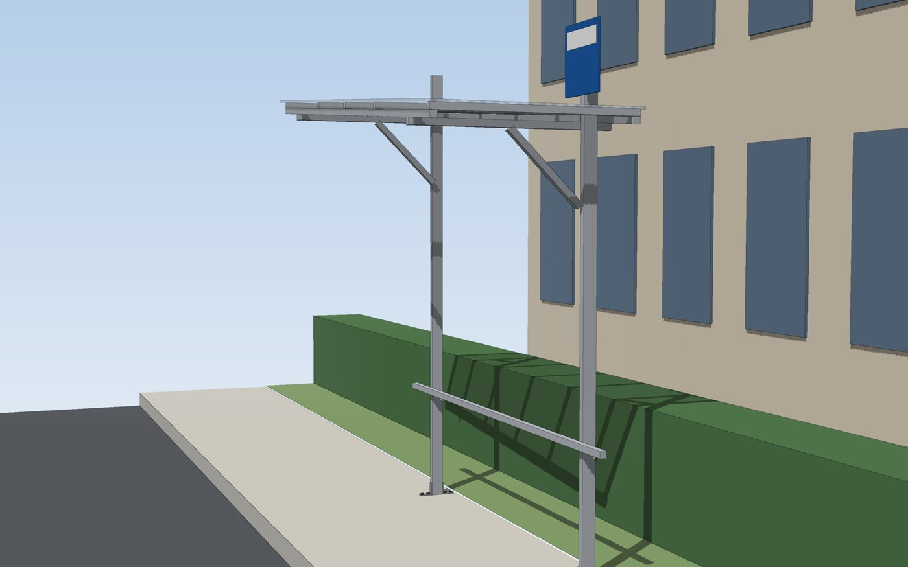
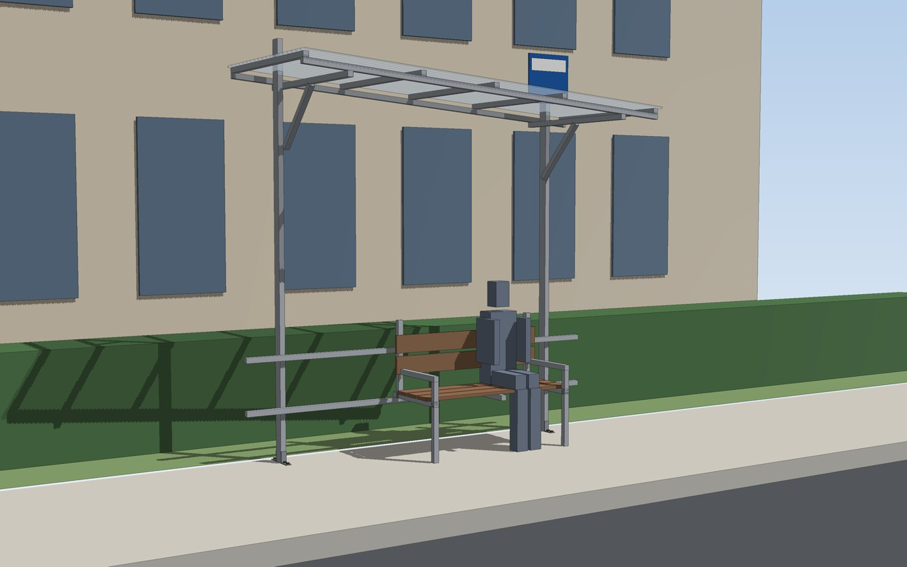
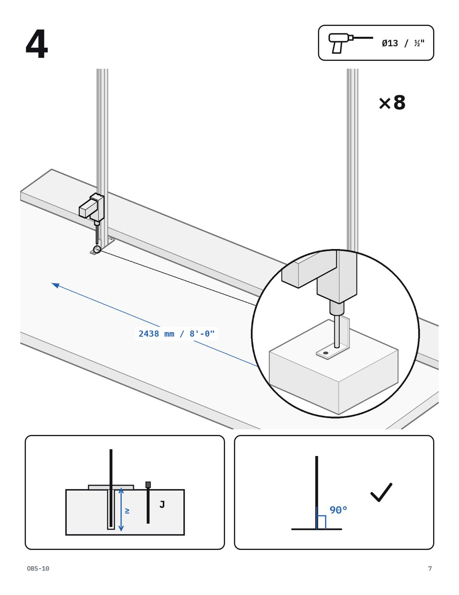
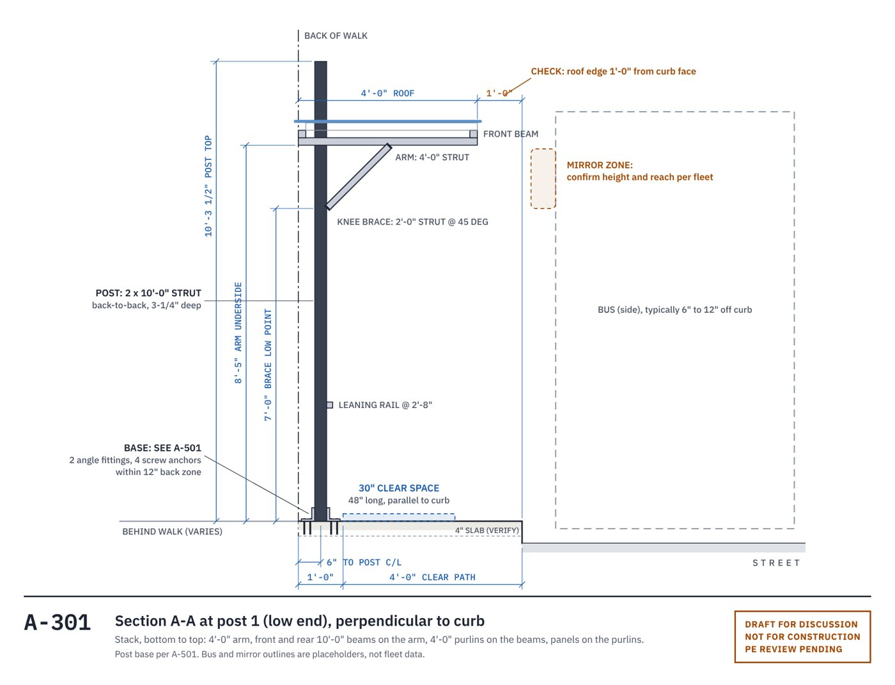

DRAFT REV A · FOR FEEDBACK · NOT FOR CONSTRUCTION
A bus shelter anyone can build from hardware-store parts
OBS-10 is an open-source, two-post shelter made from stock-length galvanized strut channel, bolted together with standard fittings. No welding, no metal cutting: two people, hand tools and one hammer drill.
It fits a 1.5 m / 5 ft sidewalk while keeping a 1.2 m / 4 ft clear path, and costs about US$1,000 in materials.

The design
3.05 m / 10 ftroof on two posts, cantilevered 1.2 m / 4 ft over the walk
3 lengthsof 41 mm / 1-5/8 in strut: 10, 4 and 2 ft. Nothing to cut
8 anchorssurface-mounted to existing concrete, no footings
760 × 1220 mmwheelchair space under the roof, 2.03 m / 80 in minimum headroom
Rail or benchleaning rail on narrow walks, 4 ft bench from about 2.1 m / 7 ft
~US$990materials, shelter only; ~US$1,440 with bench (US retail, Oct 2026)




Give feedback
Pick the topic closest to your comment. Each opens a short form on GitHub (a free account is needed).
Structural / engineeringLoads, anchors, connections, codes
AccessibilityWheelchair space, seating, clear path
Parts and sourcingLocal equivalents, prices, availability
Manual clarityA page or step that's unclear
Local adaptationClimate, codes, fleet, sidewalks
Ideas and questionsOpen conversation in Discussions